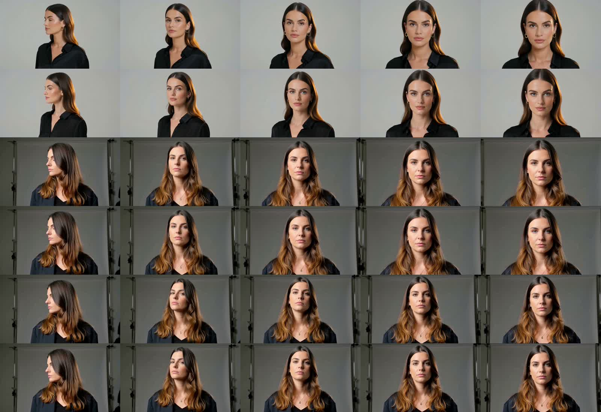
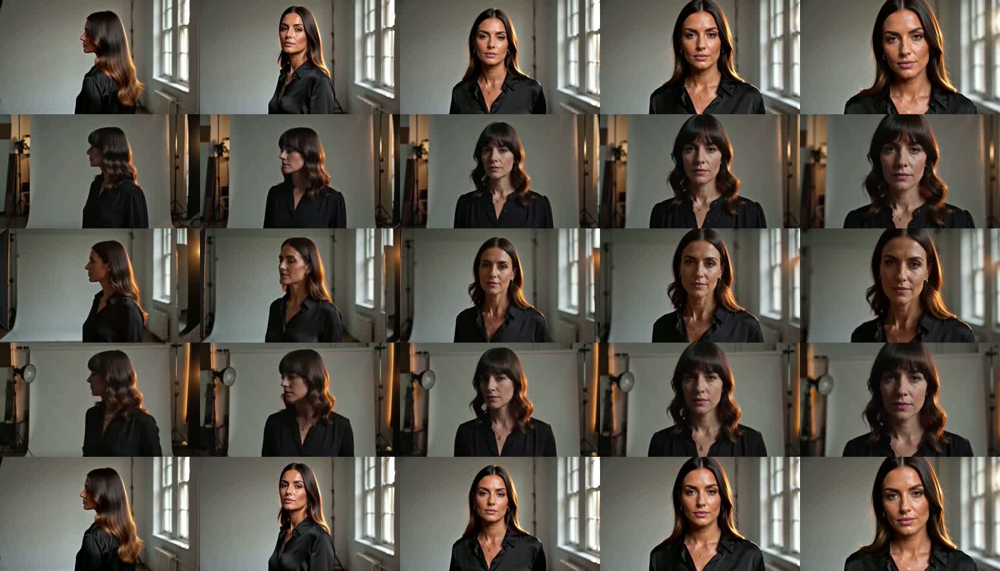

MAX-T0
MAX-T0 · 3.41 s end-to-end · 1344×768
Raw metadata3 Turbo calls ≈ $0.60; 0 new Max calls. One fixed prompt/seed, not a general model ranking.
Image rows: MAX-T0 / TURBO-T0 / MAX-I1 / TURBO-I1 / MAX-FL1 / TURBO-FL1.

MAX-T0 · 3.41 s end-to-end · 1344×768
Raw metadataTURBO-T0 · 10.50 s end-to-end · 1344×768
Raw metadataMAX-I1 · 9.14 s end-to-end · 1344×768
Raw metadataTURBO-I1 · 6.34 s end-to-end · 1344×768
Raw metadataMAX-FL1 · 8.91 s end-to-end · 1344×768
Raw metadataTURBO-FL1 · 9.13 s end-to-end · 1344×768
Raw metadataImage rows: C0 Base / C1 0.7 no DY / C2M 0.5 no DY / C2 0.7 DY / C0R Base reset. Same settings except modifier/trigger.

C0 · 820.91 s end-to-end · 960×544
Raw metadataC1 · 620.73 s end-to-end · 960×544
Raw metadataC2M · 1131.43 s end-to-end · 960×544
Raw metadataC2 · 1466.79 s end-to-end · 960×544
Raw metadataC0R · 710.81 s end-to-end · 960×544
Raw metadataBLOCKED: local resample unavailable. No 2K output, no substitute upscale. Selected source below.
MAX-I1 · 9.14 s end-to-end · 1344×768
Raw metadataAudio: stream structure checked only; listen yourself for room tone, fabric rustle, breath and shutter timing. LoRA: compare facial appearance, hair, tonal contrast and head-turn amplitude. Baseline reset MP4 is byte-identical to C0.
Complete machine-readable evidence and paths